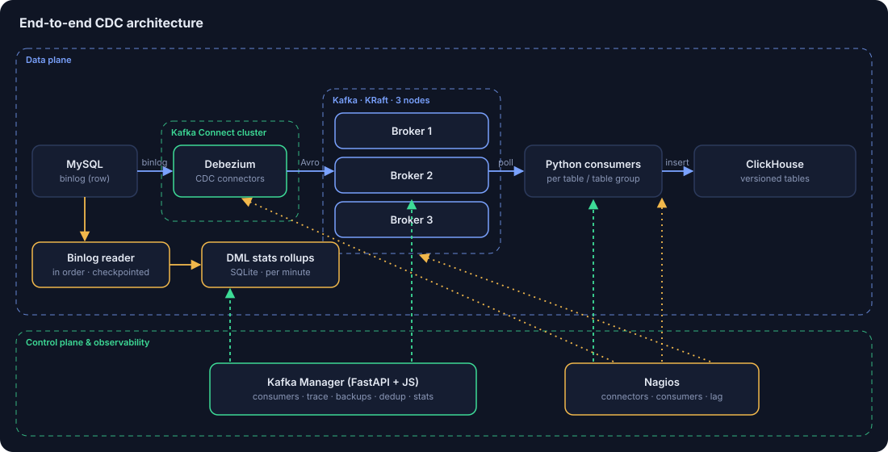
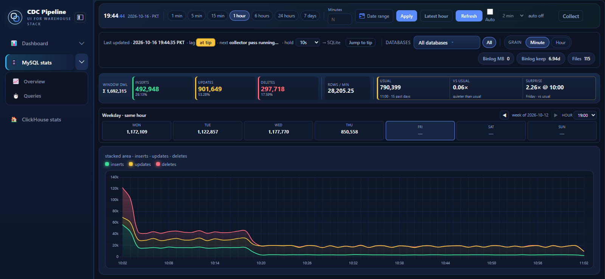

Toolbox
What I work with
Streaming


Warehouses


Platforms
Microsoft Fabric

Code and ops


MS Computer Science, University of Eastern Finland (2022–24) · BS CS, UMT Lahore (2013–17) · Teradata Vantage Associate · 8 IBM data certificates
Muhammad Danish Ishfaq
I design real-time data platforms that move data out of busy production systems and into analytics without losing a row.
Flagship
MySQL → Debezium → 3-node KRaft Kafka → Python consumers → ClickHouse, with a control plane I built.


Selected work
Led the move off Databricks, Azure SQL DW and ADF to a Fabric Lakehouse and Warehouse.
Fabric · Spark · Power BIReplaced legacy PySpark with dbt on Iceberg. Queries got 40% faster.
dbt · Iceberg · AirflowReal-time banking streaming platform on Kafka and Kafka Streams.
Kafka · Scala · KubernetesWarehouse loads and automation on Teradata and Hive.
Teradata · BTEQ · HiveNiFi, PySpark and Airflow into Redshift and Hive marts.
NiFi · Spark · RedshiftIoT Core to S3 and IoT Analytics, queried in Athena.
AWS IoT · S3 · AthenaExperience
Toolbox
Microsoft Fabric
MS Computer Science, University of Eastern Finland (2022–24) · BS CS, UMT Lahore (2013–17) · Teradata Vantage Associate · 8 IBM data certificates
CDC pipelines, Kafka, warehouse migrations, real-time analytics.